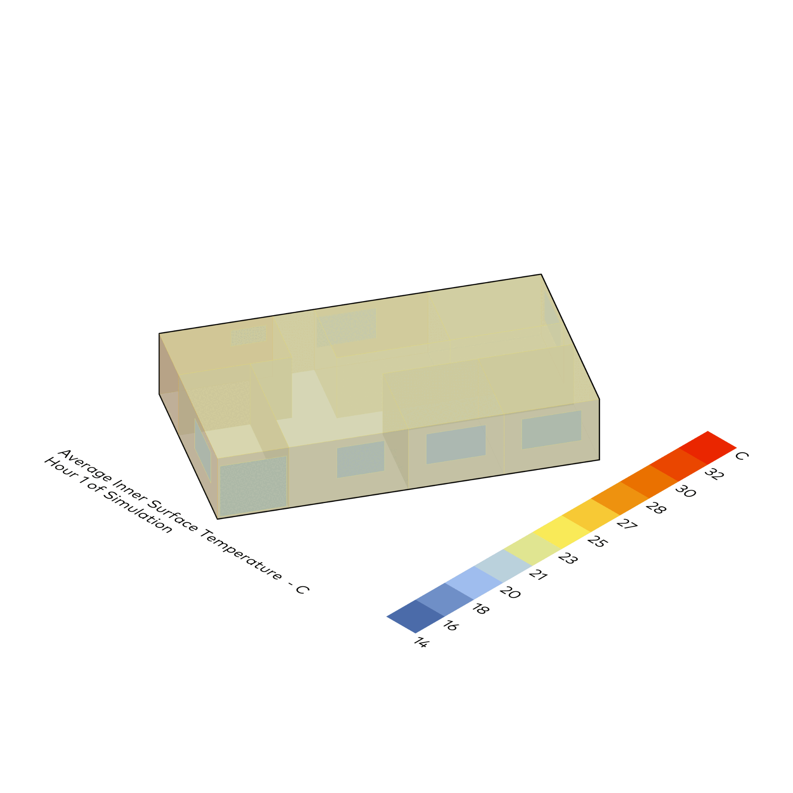
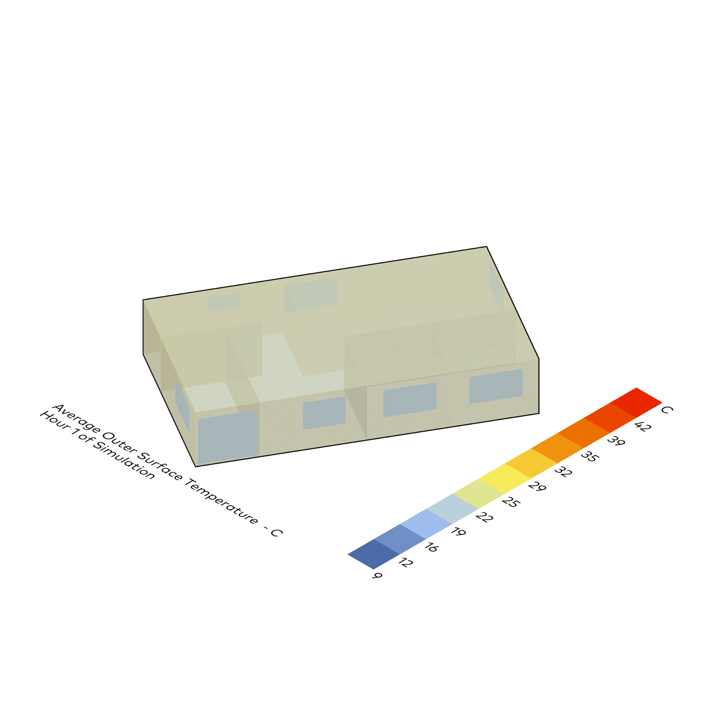
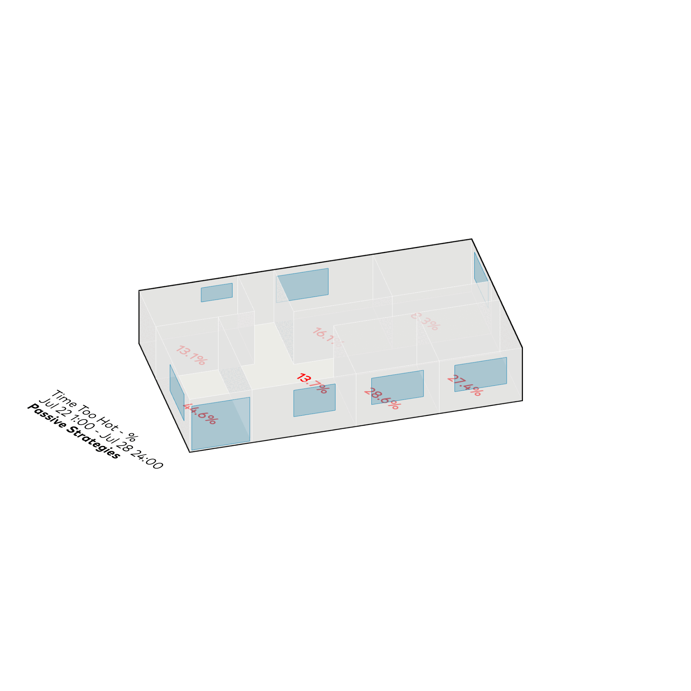

Passive + Aktive Strategien
Honeybee
⬤ Honeybee modelliert passive Systeme (natürliche Lüftung, Erdrohre, Verdunstungskühlung, Speichermasse, Schornsteine, Doppelhüllen, solaraktiv) und aktive (Strahlungspanels, Kühlbalken, VRF, Wärmepumpen, Rückgewinnung). Parametrische Studien optimieren Vorlauftemperaturen, Regelstrategien, Szenarien. Identifiziert Minimal-Energie/Maximum-Komfort – datengetriebene Klimagerechtigkeit.
⬤ Honeybee models passive systems (natural ventilation, earth pipes, evaporative cooling, storage mass, chimneys, double shells, solar active) and active systems (radiation panels, cooling beams, VRF, heat pumps, recovery). Parametric studies optimize flow temperatures, control strategies, scenarios. Identifies minimum energy/maximum comfort – data-driven climate justice.